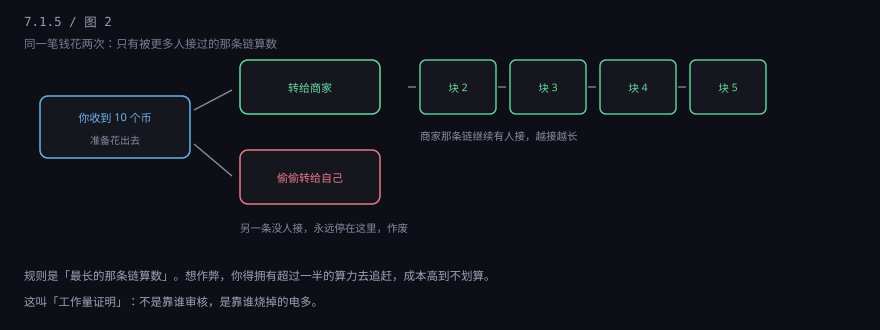
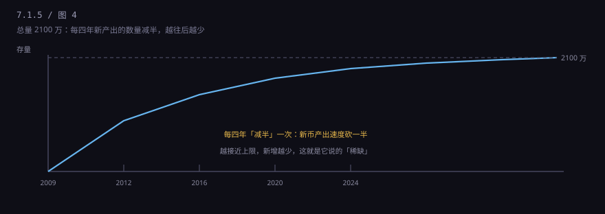

约 0.3 万字 · 4 张图 · 不讲币价，讲它到底是个什么东西
2008 年 10 月，一份九页的 PDF 在一个密码学邮件组里流传， 署名是中本聪。标题很朴素：《比特币：一种点对点的电子现金系统》。
它要解决的问题，其实一句话就能说完：能不能不通过银行，直接把钱从 A 转给 B？
你可能会说，现金不就是吗？我递给你一张一百块，不需要银行。 但现金只能当面给。隔着网络，问题就来了。
因为数字的东西可以复制。我把一个文件发给你，我这儿还有一份。 那"一笔数字的钱"，我发给你的同时，是不是还能再发给别人？ 这就是所谓的双重支付，也叫"双花"。
现实里的解法是找一个中心：银行。银行手里有一本总账， 它记着"张三只有 100 块"，转账时它把张三减 100、李四加 100， 同一笔钱不可能同时记两次。这个办法很好用，代价是： 你得信任这个中心。它可能记错、可能被黑、可能不让你转、可能自己倒了。
中本聪的问题是：能不能既没有中心，又不会双花？
很多人以为比特币的技术难点是密码学。不是。 加密、签名、哈希这些东西，在 2008 年已经很成熟了， 密码学朋克们研究了二十多年。
真正的难点是：没有中心，谁来记账？凭什么信他记的？
如果随便谁都能记账，那坏人就可以给自己记一万个币。 如果指定一个人记，那不就又变成中心了吗？
这个问题卡了密码学界很多年。比特币的答案很反直觉： 让所有人一起记，然后让记账这件事变得很贵。
想象一个村子，没有会计，但每家门口都挂着一本一模一样的账本。 谁转给谁多少钱，全村广播一遍，每个人都在自己的账本上抄一笔。
这是比特币最核心的想法，技术上叫区块链。 名字听着唬人，其实就是"一页一页接起来的账本"： 每一页（一个区块）记着十来分钟内的所有转账，页尾盖一个"指纹"； 下一页的开头带着上一页的指纹。想改前面某一页，后面每一页的指纹都对不上， 全村人一眼就能看出来。
这个"指纹"是用一种叫哈希的算法算出来的。你不用懂哈希的数学， 只要知道它的一个特性：输入改一个标点，输出就面目全非，而且没法反推。
假设你真有 10 个币，你同时做了两件事：转给商家买东西， 又转给自己的另一个地址。两笔都广播出去了，村里人先记哪一笔？

两条分支会同时存在一会儿。然后大家继续往自己认可的那条上接新的页。 过一段时间，一条越来越长，另一条没人接。规则很简单：最长的那条算数。 被抛弃那条上的转账，就等于没发生过。
所以商家收币时有个惯例：等几个确认。等六个块（大约一小时）， 就是"后面已经有六页接上了"，这时候想翻盘，得把六页全部重算，成本极高。
问题来了：凭什么大家愿意记账？又凭什么坏人不来乱记？
比特币的答案是：记账有奖励，但记账要先解一道很难的题。
这道题没有技巧，只能一个一个数去试，谁先试出来谁就有权记这一页， 然后拿到新发行的币和手续费。这个"试"的过程就是挖矿， 烧的电全花在这儿。
它有两个作用。第一，排队：算力有限，所以平均十分钟才出一个块， 不会乱套。第二，提高作弊成本：你想改账，得拥有超过全网一半的算力， 还要重新算完所有后面的块。这笔投入通常远大于你能偷到的钱，所以不划算。
代价也很直白：耗电。全网一年耗电量相当于一个中等国家。 支持者说这是"用能源换安全"，反对者说这是"纯粹的浪费"。 这个争论没有标准答案，但它确实是比特币的固有成本。
中本聪的论文标题里写的是"电子现金"，意思是拿来花的。 十几年过去，它没成为现金，主要成了一个价格波动极大的资产。
一种东西要当"钱"，至少得满足三条：计价方便、价格稳定、随时能花。 比特币只做到了第一条的一半——它能标价，但标出来的价格天天变。
你想想，如果楼下便利店的可乐今天 3 块、明天 2 块 4、后天 3 块 8， 你还会用它当记账单位吗？不会。你不会用它标工资，也不会用它签合同。 这就是它当不了"日常货币"的根本原因，不是技术问题，是波动性。
总量固定这件事，平时听着是优点（不会通胀）， 但在经济下行时是缺点：没人能"多印一点"来救急，反而容易引发抛售。 这也是它和现代货币理论最根本的分歧。
比特币网络每秒大约处理 7 笔交易。Visa 在峰值时每秒能处理几万笔。 这个差距不是"优化一下"能解决的，是设计上就限制死了—— 块大小有限、十分钟一个块，算下来就是这个数。
结果是：一拥堵，手续费就飙升。2017 年、2021 年两轮热潮里， 一笔转账的手续费到过几十美元，小额支付完全没法用。
还有一条更麻烦：转错了没法撤回。 银行转账填错账号，还能找客服、走差错处理；链上转出去， 没有"客服"，没有"撤销"，也没有人能为你的失误负责。 私钥丢了，币就永久锁死——据估算有几百万人为因素丢失的币，永远找不回来。
这是个绕不开的问题，也是最容易被两边都说糊的问题。
先看它有什么：稀缺。总量写死在代码里，2100 万个， 每四年新产出的数量减半，2140 年左右基本挖完。

再看它没有什么：没有现金流。 股票有分红，债券有利息，房子有租金，黄金至少还能做首饰。 比特币什么都不产生。你持有它，唯一的收益来源是"有人愿意出更高的价买走"。
所以它不能用市盈率、现金流折现这些方法估值。它的价格完全由供需决定， 而需求又高度依赖叙事和情绪——这就是它波动这么大的原因。
"数字黄金"这个说法，逻辑上说得通一半：黄金也没有现金流， 也是靠共识。但黄金有几千年的共识、有工业用途、有各国央行真金白银地买。 比特币的共识只有十几年，而且高度集中在少数人和少数机构手里。 是不是同一回事，你自己判断。
和 USDT 一样，这条要说清楚。
2021 年 9 月，央行等十部门明确：虚拟货币相关业务活动属于非法金融活动。 包括兑换、作为中央对手方买卖、撮合交易、代币发行融资、衍生品交易等。 境外交易所向境内居民提供服务，同样属于非法金融活动。
同年，国家发改委等部门把虚拟货币"挖矿"列入淘汰类产业，各地清退矿场。 原因很实际：耗电大、不产生实际产出、且与炒作和资金外流高度相关。
对普通人：持有不违法，但风险自担；交易不受法律保护； 用银行卡收付币款容易触发风控；参与"跑分""代买"可能构成犯罪。
抛开价格，比特币在技术上确实留下了一样东西： 它第一次证明了，在互不信任的双方之间，可以不需要中介完成一次不可篡改的转移。
这个想法后来被用到很多地方：跨境结算的试验、供应链溯源、数字凭证。 大部分场景其实用不着"去中心"，一个数据库就够了， 但"不可篡改的公共账本"这个思路本身是有价值的。
它也是一次大规模的社会实验：一个没有发行方、没有管理机构、 运行了十几年的货币系统，到底能不能活下来。目前看，它活着， 但活成了"一种资产"，而不是"一种钱"。
接下来讲第三种"数字的钱"，也是唯一一个由国家发行、在中国境内合法流通的：数字人民币。 它和微信余额、和比特币分别差在哪儿，下一节说清楚。